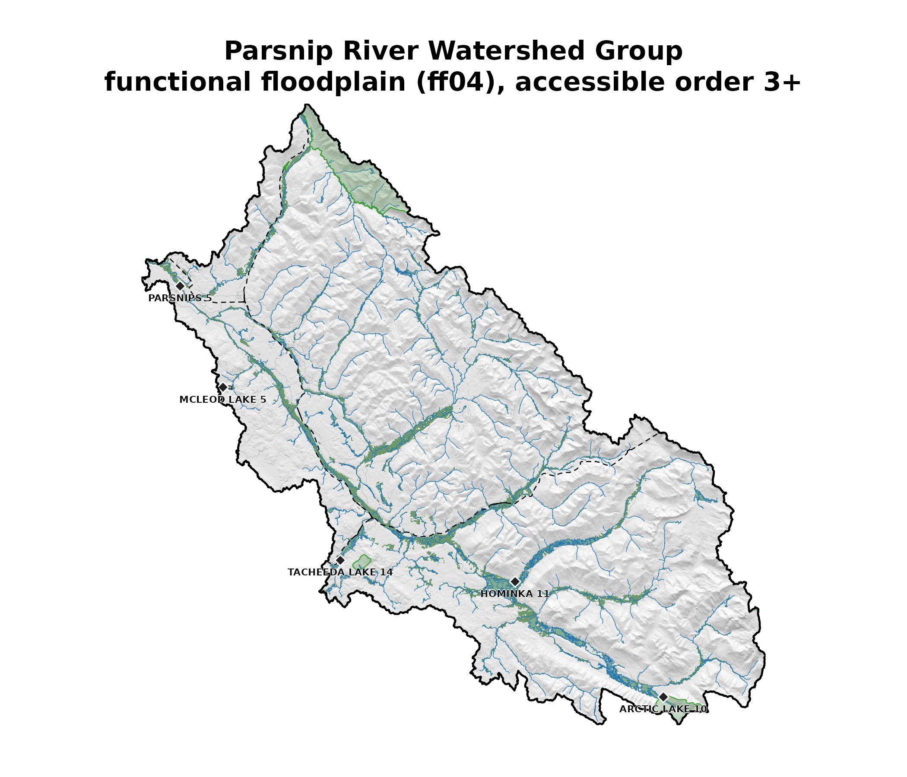
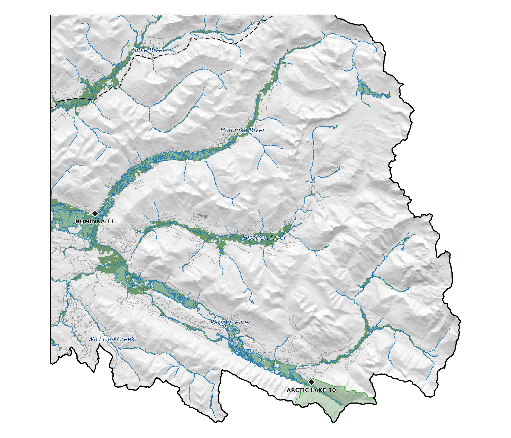

Floodplains of the Parsnip River watershed group
Source:vignettes/pars-floodplain.Rmd
pars-floodplain.Rmdflooded
is an R package that maps floodplains from an elevation model and a
stream network. This article runs it over the Parsnip River watershed
group, 5,597 km² of British Columbia between Prince George and
Mackenzie, where the Parsnip River flows north into Williston
Reservoir.
The answer. At flood factor 4, flooded
maps 40,640 ha of floodplain, 7.3 % of the watershed
group, along 2,314 km of streams of order 3 and up that bull trout can
reach.
What does the map show?
The map starts from the 30 m cells that pass four tests:
- the slope is at most 9 %;
- the cell is within 1,000 m of a stream in a straight line;
- it is close to a stream by a distance that counts steep ground as farther (a cost under 2,500);
- it lies below a water level 4 times the stream’s bankfull depth above the stream, spread across the valley from the streams. Bankfull depth is estimated from a stream’s upstream area and mean annual precipitation, through Hall et al.’s regression for channel width (Hall et al. 2007).
It then closes small gaps, fills holes under 0.25 ha, drops patches under 0.5 ha and smooths edges with a majority filter, so a cell can be in without passing every test, or out despite passing them. Last, it adds the lakes and wetlands the streams flow through, which make up 20.4 % of the floodplain, and the cells whose centre lies inside a stream’s channel width. Every setting but the flood factor is the package default.
The streams are those of order 3 and up that bull trout can reach in
the default configuration of link,
the R package that models fish access and habitat on BC’s stream
network.

Floodplain at flood factor 4 (green) over a hillshade of the elevation model, with the streams it was mapped from (blue), lakes and wetlands (pale green, outlined in blue), resource roads (grey), railways (black, dashed), parks and protected areas (light green), First Nations reserves (grey, marked with a diamond and named) and the watershed group boundary (black). Roads other than resource roads are left off at this scale.
Which flood level should I use?
flooded has three preset levels, 2, 4 and 6 times
bankfull depth; the names it gives 4 and 6 are its own reading, not a
published one. The table adds 7 and gives the Parsnip’s floodplain at
each level, with every other setting unchanged. This article uses 4.
| Flood factor | Named for | Where the level comes from | Floodplain (ha) |
|---|---|---|---|
| 2 | Flood-prone width: roughly a 50-year flood stage or less | Rosgen’s multiplier, twice the maximum bankfull depth (Rosgen 1994, 1996, as cited in Nagel et al. 2014) | 38,516 |
| 4 | Functional floodplain |
flooded’s preset |
40,640 |
| 6 | Valley bottom, including terraces |
flooded’s preset |
42,371 |
| 7 | Valley extent on 30 m elevation models | Recommended for 30 m data (Nagel et al. 2014) | 43,155 |
Going from 4 to 7 adds 6.2 % to the area.
How do I read it up close?
The south-east corner holds the Parsnip’s headwaters around Arctic Lake, on the divide between Arctic and Pacific drainage. At this scale the floodplain follows individual channels, lakes and wetlands, and sits against roads, railways, reserves and parks.
The map does not record which test, or which step of the tidying, left a cell out.

The south-east corner of the watershed group, around Arctic Lake: floodplain (green), streams (blue) with named streams labelled, lakes and wetlands (pale green, outlined in blue), roads and trails (grey), railways (black, dashed), parks and protected areas (light green) and First Nations reserves (grey, named).
How good is it?
This map has not been compared with floodplain mapped on the ground. Its water level rests on Hall et al.’s channel-width regression, which explains about half the variation in width (R² = 0.47) across 1,951 field measurements in the Columbia River basin (Hall et al. 2007), and on a conversion from width to depth fitted in a single Idaho basin. The flood factor multiplies whatever error those carry.
What should you know before using it?
- It maps terrain, not floods. No discharge, flood routing or return period goes into it; the flood factor sets a level relative to the streams’ bankfull depth.
- It starts only from the streams it is given. A smaller stream, or one bull trout cannot reach, does not seed the map; ground beside it is in the map only as measured from those streams, through the tidying, or as part of a lake or wetland they flow through.
- It works on 30 m cells. Nothing narrower than a cell is resolved.
Data and how it was built
The elevation model is Natural Resources Canada’s MRDEM-30.
The streams are BC Freshwater Atlas segments from link’s
run of 2026-10-17, with upstream area and mean annual precipitation from
fwapg; lakes, wetlands
and named streams are from the atlas too. Roads and trails, railways,
reserves, and parks and protected areas are from the BC Data Catalogue.
The data were built by data-raw/wsg_vignette_data.R,
which ran the call below; the fl_valley_confine() call took
2.2 minutes (Apple M1 Max):
valleys <- flooded::fl_valley_confine(
dem = dem,
streams = streams,
area_field = "upstream_area_ha",
precip = flooded::fl_stream_rasterize(streams, dem, field = "map_upstream"),
waterbodies = waterbodies,
flood_factor = 4
)The results can be downloaded: pars.gpkg
(the floodplain, streams, lakes and wetlands, and the map layers), pars_valleys.tif
(the floodplain grid) and pars_dem.tif
(the elevation model, truncated to whole metres; the floodplain was
mapped from the unrounded values).
Software and how to cite it
-
floodedv0.8.3, at commit 4005f97: the floodplain model. DOI for all versions: 10.5281/zenodo.23302790. -
linkv0.66.0, modelled at commit ee21eb1 and recomputed at a17e917: which streams bull trout can reach. DOI for all versions: 10.5281/zenodo.23264990. -
freshv0.39.0, at commit e247ca1: the stream network modelling enginelinkruns on. -
fwapg, at commit f9718cb
as
link’s run recorded it: the Freshwater Atlas in PostgreSQL. Upstream area and precipitation were read from its tables on 2026-10-19.
Cite flooded as:
Irvine A (2026). flooded: Map Floodplains from an Elevation Model and a Stream Network. New Graph Environment Ltd. doi:10.5281/zenodo.23302790 https://doi.org/10.5281/zenodo.23302790. Version 0.8.4, https://github.com/NewGraphEnvironment/flooded.